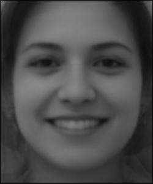
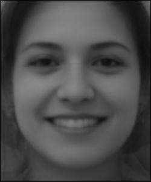

Hello, here is things.
Here is a simple triangulation for correspondances of two images we want to morph. We did this by manually placing corespondances on each face. We also append the corners here as to not cause problems further down the line.


Now for us to compute the midway face, we need to apply some transformations to the two images. To do this, we define a triangulation on the set of points generated by taking the pointwise mean of each point in the correspondances arrays we have. Once We have this, we can run a triangulation. Because of this midpoint trinagulation, we are less likely to have the triangulation overly skewed to one of the images. Altough, the faces are origented in a similar way, so this would likely not be a notable problem in this case. Here we us a simple delaunay triangulation.
Now that we have all the triangles, we can do some inverse-warping. We do this by first defining a linear transformation from the midpoint trianlgle, back to the two triangules in the other images. Once we have this, we can apply these transformations to get the corresponding pixel values in the other two images. Now because there are all sorts of rotations, we may have pixels are are not perfectly aligned, therefore we make use of linear interpolation on the values to get a smooth image. We then add half of the first image's transformed values with the transformed values of the second triangle divied by two. This in total gives us the following midway face:
Original Images:

Midface generated by morph:

Now that we can morph shapes, let us compute a simple morph sequence. To do this we need to get more functionaly for our transforms. First we need more control over the transformation of the triangules. To do this we can use the midpoint triangulation, and apply it to general convex-combinations of the original corespondances in our two images. In this setup, the midway face from before is derived by simply giving a warp_frac value of 0.5.
We can also do a similar thing with the dissolve_frac. Here once we interpolate, we take our output as the convex combination of our two transformed triangles. Here, if we choose a dissolve_frac of 1 or 0, we can save some computing time by not calculating all the interpolations and pixel values from the image we aren't taking pixel values from. Now that we have this function, we can choose a step value and apply the morphing function to the images using different values with stepsize 1/steps. Here we use the same warp and dissolve values for each call, so we don't need to calculate the warps for the edge cases as they should return the original image if transformed.
Lets now do some morphing on some datasets. Here we will use the FEI dataset, which for some reason is in black and white. We will use the first 100 faces of this dataset.
Before we do anything, we must first define new correspondances on our original image to match those of the dataset. To do this, we can go through each point individually, note what it corresponds to on the face, and then move it to the right place.
Our original image with corespondances for the FEI dataset. INSERT IMAGE Here
The dataset has two notable characteristics to partition on: gender and smile. Below we see what we get when we average out the dataset.
 

We can apready see that there is some bais going on with the dataset here, which will cause some problems down the line. Looking back at the Obama image, he is smiling, so lets do some work